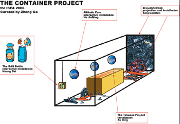
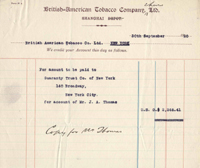
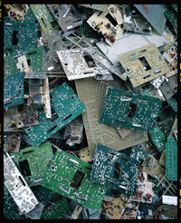
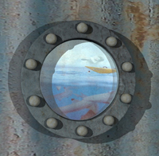

Zhang Ga 1-7-2006 in Shanghai The shipping container is a space that travels. Neither an empty space nor a neutral white cube, the container carries within it commodities of livelihood as well as emotional residues. The container ships useful items that sustain life and waste that needs to be discarded, to be relocated far from where it was produced and even turned to profit. Legality is often an ambiguous notion on the open sea; justice becomes an equivocal contingency of the perilous waters. Traversing territories of the haves and the have-nots, the container moves the world in directions most evident in its economic aspects. The container records history, its trajectory reveals the global tides of political intricacies, economic speculations, human mishaps, and a collective unconsciousness.  This shipment from China apparently contains goods not as commonly understood, rather it holds a body of art objects with no particular use value. It tries, however, through its voyage to San Jose, to unveil the various sentiments that a shipping container might invoke as an epiphany of the global phenomenon of container culture.  Zhong Chen ("Prophecy") faithfully presents a set of original accounting paperwork, bank records, receipts and other historical artifacts that document the business transactions of the British American Tobacco Company in China during its formative years, and the artist Xu Bing's personal financial transaction record with the Duke Foundation during the creation of the tobacco ProjecT in 2000. Understated, almost detached from the common denominator of art objects, Xu Bing's deadpan scrutiny of the generations old financial paperwork reflects on China's modern and contemporary experience as a marketplace as well as her interaction with global economy, implicitly invoking multiple interpretations.  disCONNECTION uncovers, through Xing Danwen's unforgiving eye, the story underneath mountains of electronic garbage. Xing traveled many times to southern China to photograph a population of over 100,000 living on the fringe of life, recycling thousands of tons of electronic waste dumped in China by the West. Under the dense, intensive webs of wires and machine debris, one attends to hear the groaning of a people left crushed by the unstoppable global economic engine.
Jin Jiangbo The third eye perceives the earth. The third eye perceives the world, the third eye perceives you and me, and the third eye perceives our mind. Imagination from the far west and far east of the earth. The opening of this third eye shall let the imagination hold free and fair dialogues, and through the channel, it shall inspire hope for the people from these two cities. The third eye crosses space and beyond.  Hu Jie Ming's seemingly benign and poetic interactive installation contemplates the growing tension between dominant cultural forms and the marginal and the fragmented, often disparaged and in danger of extinction. Jing Jiangbo But the desire for hope and connection and therefore understanding and reconciliation is not just from an ancient romance. Shanghai-based artist Jing Jiangbo builds a well that digs through to the other side of the world to link people by smiles and laughter, a handshake across the ocean, a peace sign transmitted through an electronic pulse that speaks the language all cultures understand. Finally, we have Huang Shi's reinvention of a lost legacy when medieval sailors communicated by drifting bottles. For the artist, this intimate, crude mode of communication is of particular metaphorical importance in a world that is increasingly permeated with technologically aided synthetic forms of transmission. His nostalgic and simple wish may help us to rethink the longforgotten Marxist reasoning of alienation.
Curator: Zhang Ga Zhang Ga is a media artist, curator and co-director of agent.netart. He has exhibited internationally including the Ars Electronica Center (Austria), Adelaide Art Festival (Australia) Dutch Electronic Art Festival, Whitney Museum of American Art, Singapore Art Museum and Nabi Art Center in Seoul (South Korea) among others, curated exhibitions, organized conferences and digital salons, written and lectured on new media art practice and criticism, and served on jury duties for media art grants. He is co-artistic director of the Millennium Dialogue: Beijing International New Media Arts Exhibition and Symposium, He is on the board of the curatorial committee of the 13th Inter-Society for the Electronic Arts Symposium (ISEA2006). Zhang Ga has taught at the MFA Design and Technology Program at Parsons School of Design, School of Visual Arts and Pratt Institute. In 2005, he joined the New York Institute of Technology as associate professor of communication arts and is guest professor of Information Art of the Academy of Arts and Design and visiting fellow of Art and Science Research Center, Tsinghua University, China.
|